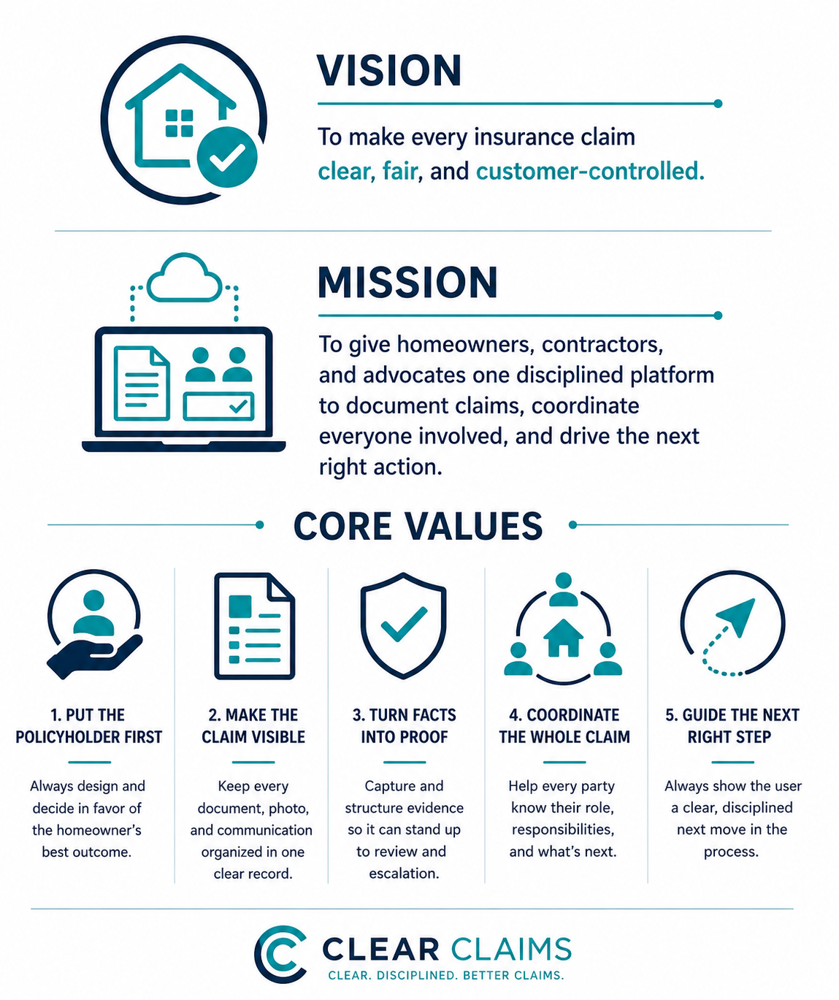

What it is
A claim hub for the people doing the work.
Chuck and Cynthia need one place to see what changed, who owes information, which claims are urgent, and what action should happen next.
About the system
ClearClaims is a customer service hub for homeowners, contractors, and public adjusters: a role-based workspace, client portal, contractor portal, and evidence engine built around one clear record of the claim.
What it is
Chuck and Cynthia need one place to see what changed, who owes information, which claims are urgent, and what action should happen next.
Why it matters
Emails, uploads, iMessages, payments, and portal messages create a timeline that can support customer updates, daily work planning, and future DOI complaint reports.
North Star

Spaces
Claim urgency first, with review queues for new emails, uploads, messages, payments, lead activity, and AI-suggested tasks.
Claim status, timeline summary, signed documents, messages, exact request age, and who is expected to provide information.
Multi-claim contractor accounts for uploads, invoices, estimates, photos, update requests, and limited timeline context.
No carrier portal account in v1. Adjusters receive controlled upload or request links that show only what is formally requested.
Clear categories
Working model
Outlook email, portal message, document upload, iMessage, payment record, or lead submission.
The system suggests claim matching, timeline events, task ownership, document names, and next action.
Cynthia and Chuck approve assignments, customer-facing summaries, and any high-risk language before use.
Requests, delays, payment history, and carrier responses can support a plain-language homeowner DOI complaint packet.
ClearClaims should feel simple on the surface: what changed, who owes what, how long it has been, and what happens next.
Return to Prototype